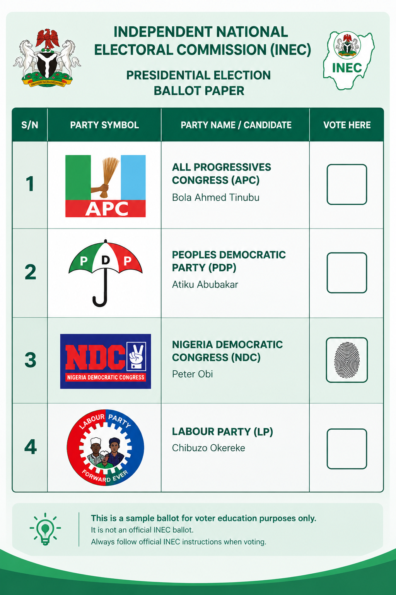

Your PVC.
Your Voice.
Your Future.
Preparing to vote for the first time? Follow our simple step-by-step guide to understand voter registration, verify your details, and learn how to collect your Permanent Voter Card.
Let's get you ready!
Registration
Understand how to register
Verification
Learn how to check your details
Collection
Prepare to collect your PVC
Let's get you vote-ready.
Every journey begins with a first step. Choose a stage below and follow the instructions at your own pace.
Registration
Learn the eligibility requirements and understand the steps involved in registering as a voter.
View checklist →Verification
Learn how to check your voter registration details through official INEC services.
View checklist →PVC Collection
Understand how to find collection information and prepare for your visit to the designated centre.
View checklist →LEARN BEFORE YOU VOTE
Know Your Ballot
Learn how to identify party symbols and candidate names using this sample ballot illustration.

This is an educational illustration, not an official INEC ballot. Always follow official INEC voting instructions.
Make your first voting experience easier.
MyPvc Guide is an independent voter-education project designed to help Nigerians understand the steps involved in preparing to vote.
Visit Official INEC Website →